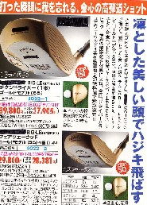

某大手ゴルフ用品メーカーの直販ショップからＤＭがきた。最近はゴルフもご無沙汰なので、その店にも顔を出していない。そんなお客にせっかく来たＤＭなので、いちおう目を通した。するとヘッドがチタン製のウッドの新製品がずらり。

チタン製（金属）なのにウッド（木）とは変な話だが、むかしウッドのヘッドはパーシモン（アメリカ産の柿）で作られていた。そこでヘッドがメタル（金属）で作られるようになっても、習慣でウッドと呼ばれている。
ウッドのヘッドがメタルで作られるようになって、もう久しい。いまやウッドはメタルヘッド一色である。しかしこのメーカーＨでは、他のメーカーがすべてメタルヘッドに移行しても、最後までパーシモン製にこだわっていた。
その頃、「当社がメタルヘッドを作らない理由」と題し、いかにパーシモンがメタルより優れているかを大々的にＰＲしたチラシを見た。そこには“世の中がどうなろうと、当社はパーシモンヘッドにこだわり続ける”みたいなことが書いてあった。
そのとき このメーカーは、今後 100年作り続けても大丈夫なくらい、アメリカのパーシモンを買い占めてあるようなことも聞いた。その話を聞いたときは（へ〜）と感心した。しかしその勢いもどこへやら。徐々にメタルヘッドを作り始め、いまや他のメーカー同様、メタルヘッド一色。
う〜む、σ(-_-)の“不退転の決意”と同じレベルだ。（^-^；
＃あやうし、禁煙の誓い！（まだ踏みとどまっているけど....）
|